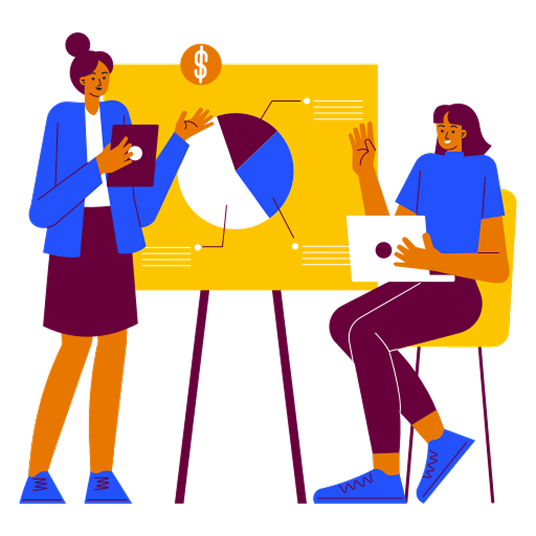
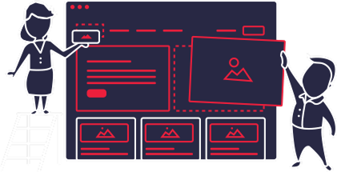
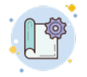
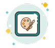
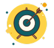
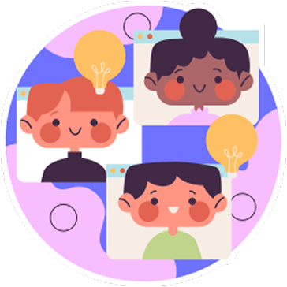
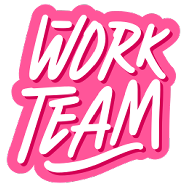
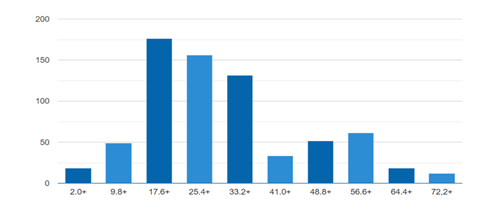

Веб студія
Організація діяльності інтелектуального колективу
Продукт веб-студії

Продукт веб-студії — це комплексне цифрове рішення для бізнесу, яке забезпечує ефективну онлайн-присутність, залучення клієнтів і зростання прибутку. Веб-студія створює корпоративні сайти, інтернет-магазини, лендінги та веб-сервіси, які працюють як інструмент продажів і комунікації 24/7. Це не просто сайт, а цифровий актив компанії, що формує імідж, підвищує впізнаваність бренду, генерує заявки та замовлення, автоматизує бізнес-процеси й покращує взаємодію з клієнтами. Цінність такого продукту полягає у масштабованості, можливості інтеграції з іншими системами, аналітиці результатів і створенні конкурентної переваги на ринку.

1.Збір вимог
Активне спілкування з замовником для визначення всього функціоналу продукту

2. Проектування
Визначення технологій, побудова високорівневої архітектури, створення макетів інтерфейсу
3. Кодування
Написання вихідного коду для реалізації продукту

6. Підтримка
Виправлення помилок, які знайшли користувачі продукту
5. Впровадження
Тестування продукту на віртуальній машині, передача користувачеві
4. Тестування
Перевірка актуального результату ПЗ з очікуваним, який описаний у вимогах
Принципи розподілу командної роботи

Принцип розподілення роботи у веб-студії базується на чіткому поділі обов’язків і відповідальності між членами команди. Кожен спеціаліст виконує свою частину роботи відповідно до компетенції: менеджер координує проєкт, дизайнер створює візуальну концепцію, розробник реалізує технічну частину, тестувальник перевіряє якість, маркетолог відповідає за просування. Ролі взаємозалежні, адже результат одного етапу є основою для наступного, тому ефективна комунікація та відповідальність кожного забезпечують якісний кінцевий продукт.
Команда розробників
Менеджер проекту
Менеджер проекту розподіляє завдання між командою, планує хід роботи, мотивує команду, контролює процес та координує спільні дії. Також він несе відповідальність за тайм-менеджмент, управління ризиками та дії у разі непередбачених ситуацій. Основний обов’язок і відповідальність PM – довести ідею замовника до реалізації у встановлений термін, використовуючи наявні ресурси. В рамках цієї задачі PM’у необхідно створити план розробки, організувати команду, налаштувати процес роботи над проектом, забезпечити зворотній зв’язок між командами та замовником, усувати перешкоди для команд, контролювати якість і виконання термінів. Його основне завдання полягає в управлінні проектом. Як і бізнес-аналітик, менеджер проекту також може бути включений у комунікацію з клієнтом, проте головним завданням PM є робота безпосередньо з командою розробників програмного забезпечення. Середній вік в Україні- 30 років. Вирізняються високим рівнем освіти (тільки 6% не мають вищої освіти). Зарплата 1700-2500$.
Бізнес аналітик
Це фахівець, який досліджує проблему замовника, шукає рішення і оформлює його концепцію в формі вимог, на які надалі будуть орієнтуватися розробники при створенні продукту. Середньому українському бізнес-аналітику 28 років, він має зарплату $ 1300-2500 і досвід роботи 3 роки.
Team Lead
Це IT-фахівець, який керує своєю командою розробників, володіє технічною стороною, бере участь у роботі над архітектурою проекту, займається рев'ю коду, а також розробкою деяких складних завдань на проекті. За статистикою ДНЗ, середній вік українських тімлідів – 28 років, середній досвід роботи – 6,5 років, середня зарплата – $2800.
Архітектор ПЗ
Приймає рішення щодо внутрішнього устрою і зовнішніх інтерфейсів програмного комплексу з урахуванням проектних вимог і наявних ресурсів.Головна задача архітектора – пошук оптимальних (простих, зручних, дешевих) рішень, які будуть максимально відповідати потребам замовника і можливостям команди. За статистикою ДОУ, середньому українському архітектору 30 років, він має 9-річний досвід роботи і отримує $ 4000.
Дизайнер
Спеціаліст, який займається проектуванням інтерфейсів користувача. В середньому українському дизайнеру – 26 років, він має досвід роботи від півроку (джуніор) до 5 років (сеньйор) і отримує зарплату $ 1000-2000.

Розробник
Фахівець, який пише вихідний код програм і в кінцевому результаті створює технології. Програмісти також мають різні галузі експертизи, вони пишуть різними мовами та працюють з різними платформами. Тому і існує така “різноманітність” розробників, залучених до одного проекту. На одному проекті переважно завжди є як мінімум два програмісти- перший, який займається back-end розробкою та інший, відповідальний за front-end. Існує два напрямки програмування - системне та прикладне. Системні програмісти мають справу з ОС, інтерфейсами баз даних, мережами. Прикладні – з сайтами, програмним забезпеченням, програмами, редакторами, соцмережами, іграми тощо. Програміст розробляє програми за допомогою математичних алгоритмів. Перед початком роботи йому необхідно скласти алгоритм або знайти оптимальний спосіб вирішення конкретного завдання. В середньому українському програмісту 27 років, його зарплата в середньому дорівнює $ 1500-2500, а досвід роботи становить 4,5 років.
Тестувальник
Фахівець, необхідний для кожного процесу розробки для забезпечення високої якості продукту. Вони тестують його, проходять через усі додатки та визначають баги та помилки з подальшим наданням звіту команді розробки, яка проводить їх виправлення За даними ДОУ, середньому українському QA-інженеру 26 років. Він має досвід роботи від півроку (джуніор) до 5 років (сеньйор) і отримує зарплату $ 600-2700.
Support
Ключове завдання support-фахівця (або Customer Support Representative) — відповідати на запитання і допомагати клієнтам у телефонному режимі, поштою або у чаті. Решта завдань залежать від процесів у конкретній компанії.
Найбільш затребувані спеціалісти команди розробки
